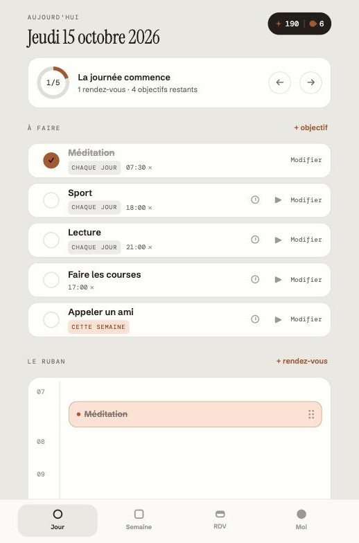
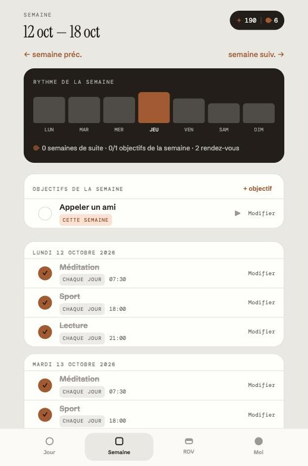
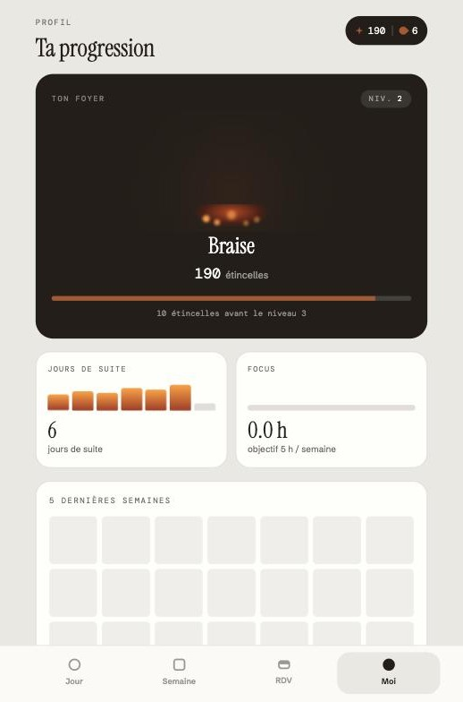
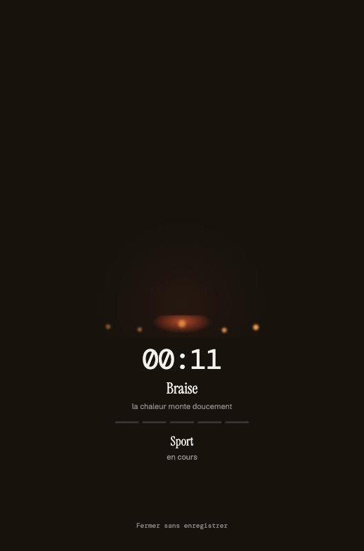

In production since August 2026
Move the Spark
A gamified personal planning app you can install on your phone like a native app.
-

Day view -

Week view -

Progress -

Focus mode
Daily and weekly goals, appointments, a timer and a Focus mode, with playful progress tracking (sparks, levels, streaks) and push-notification reminders. I designed and built it on my own, from product to infrastructure, with Claude Code as a development assistant.
Demo account
- demo@movethespark.app
- Password
- P3uIeFhU8OowO6h7